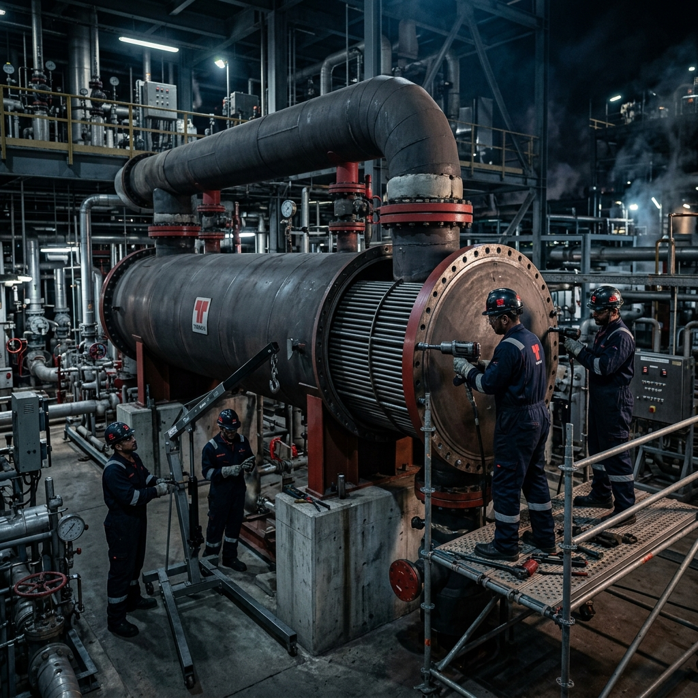
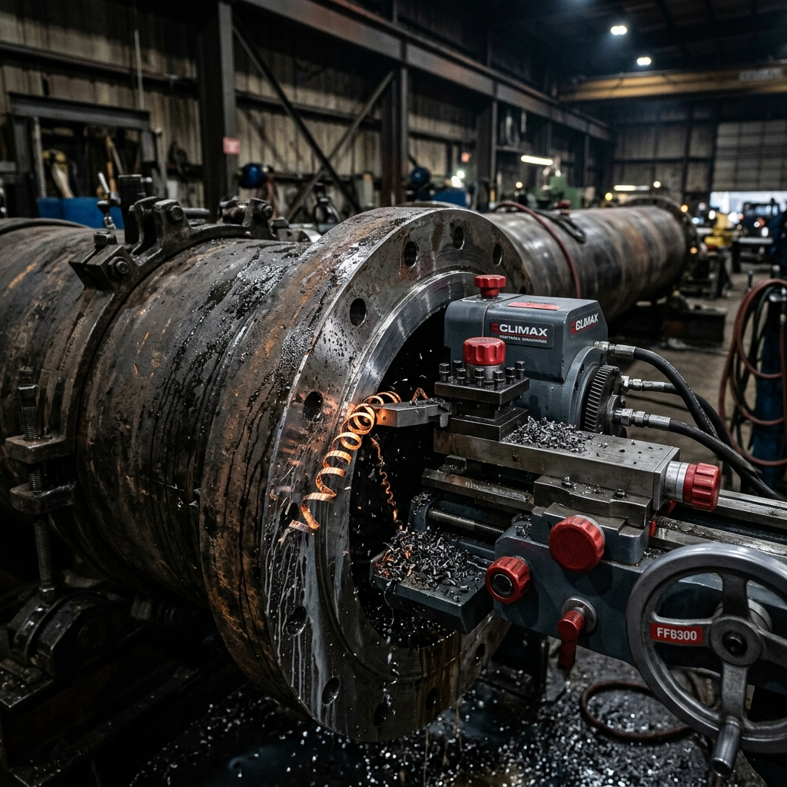

Escolha o idioma abaixo e clique em Exportar. No Chrome, selecione "Salvar como PDF", formato Paisagem e ative "Gráficos de fundo".
Fabricação, Manutenção, Recuperação e Revitalização de Trocadores de Calor de alta complexidade.
Uma potência em engenharia térmica, fabricação ASME de grande porte e manutenção avançada de trocadores.
A Versátil Global Services é pioneira no fornecimento de soluções de engenharia para equipamentos de troca térmica e vasos de pressão. Com pátios fabris modernos e tecnologia de ponta, entregamos fabricação ASME VIII / TEMA, reentubamento emergencial (retubing), usinagem de campo in-situ e gestão integrada de paradas, assegurando máxima eficiência e confiabilidade operacional.
Com engenharia térmica avançada e forte capacidade de mobilização em campo, somos o parceiro de confiança para as maiores indústrias petroquímicas, refinarias, mineração e geração de energia do mercado global.
Fabricação sob rígidos padrões ASME, TEMA e API para as operações mais exigentes.
Projetamos e fabricamos trocadores de calor do tipo casco e tubo (Shell & Tube), resfriadores a ar (Air Coolers), condensadores, evaporadores e feixes tubulares especiais. Nossos processos utilizam ligas metálicas certificadas como aço carbono, aço inox, duplex, super duplex e titânio.
Cálculo térmico e mecânico detalhado de trocadores de calor. Projetos fabricados estritamente em conformidade com ASME Seção VIII Div. 1 e normas TEMA classes R, C e B.
Soldagem automatizada de alta espessura e juntas críticas (GTAW, GMAW, FCAW, SAW) qualificadas por procedimentos EPS/RQPS rigorosos.

Dimensionamento estrutural térmico completo, garantindo estabilidade e máximo coeficiente de transferência de calor.
Domínio em soldagem e conformação de duplex, super duplex, titânio e ligas ricas em níquel.
Inspeção e tolerâncias geométricas micrométricas antes, durante e após o processo de fabricação.
Extração segura de tubos danificados, limpeza dos furos dos espelhos e montagem de novos tubos com expansão controlada por torque eletrônico ou expansão hidráulica de alta precisão.
Engenharia reversa e otimização geométrica de feixes existentes para aumentar a vida útil e a eficiência energética do equipamento sem alterar a fundação civil.
Mobilização de frentes de trabalho especializadas para intervenções corretivas emergenciais e vazamentos críticos em plantas de processo contínuo.
Tecnologia portátil de grande porte para recuperação de flanges e sedes de trocadores.
Dispomos de equipamentos de usinagem portátil para facear flanges de espelhos e bocais, fresagem de bases de assentamento de trocadores e recuperação de ranhuras RTJ diretamente no site do cliente, eliminando custos e prazos de transporte.
Usinagem in-situ de superfícies de vedação de espelhos de trocadores, assegurando planicidade perfeita e rugosidade conforme norma ASME.
Auditoria tridimensional com Laser Tracker, garantindo precisão geométrica e micro-alinhamento antes e após as operações de usinagem.

Recuperação cirúrgica de superfícies de contato de juntas em cabeçotes e espelhos de trocadores de calor.
Usinagem de ranhuras de vedação metálica (Ring Joint) com tolerância de milésimos de milímetro.
Equipamentos modulares pneumáticos e hidráulicos prontos para montagem rápida em campo.
Garantia de estanqueidade absoluta por meio de controle de qualidade rigoroso e ensaios metalúrgicos.
Cada etapa de fabricação ou manutenção de trocadores é rigorosamente testada e monitorada. Nossa rastreabilidade digital e processos de ensaios asseguram conformidade total aos padrões ASME VIII Div. 1 e normas de clientes de alta exigência comercial.
Execução completa de ensaios por Ultrassom (US), Radiografia Industrial (RX), Partículas Magnéticas (PM) e Líquidos Penetrantes (LP) com inspetores certificados ASNT/Qualidade.
Identificação Positiva de Materiais (PMI), mapeamento completo de soldas (weld map), registro de número de corrida dos aços e Dossiês Digitais (Data Books).
Teste hidrostático assistido, teste pneumático de casco e teste de estanqueidade na junta tubo-espelho.
Foco total na precisão metalúrgica de ligas finas e paredes espessas sob procedimentos AWS/ASME Seção IX.
Entrega imediata de documentação digital auditável de todos os materiais, soldas e ensaios realizados.
Mobilização em escala e gestão sob caminho crítico para reduzir o downtime industrial.
Turnarounds de trocadores de calor exigem velocidade cirúrgica. Desenvolvemos o planejamento de desinterligação, extração de feixes com extratores hidráulicos aéreos (bundle pullers), hidrojateamento de ultra-alta pressão, manutenção, teste e recolocação com controle diário no Primavera P6.
Sequenciamento detalhado de cada trocador no caminho crítico da parada geral da refinaria ou petroquímica, otimizando o fluxo de frentes simultâneas.
Uso de frotas de guindastes e extratores hidráulicos suspensos de feixes (bundle pullers) para remoção rápida e segura sem danos ao casco.
Extração, transporte ao pipe shop móvel de campo, manutenção, hidrojateamento e reinserção sincronizados.
Limpeza interna e externa de tubos com hidrojatos automatizados de ultra-alta pressão (até 40.000 PSI) para remoção de incrustações duras.
Comissionamento ágil das linhas e feixes para liberação imediata de operação segura e sem vazamentos.
CEO & Diretor Geral — Heat Exchanger Specialist
Liderança executiva voltada para a engenharia de precisão em equipamentos de troca térmica e caldeiraria de alta complexidade.
Com mais de 23 anos de sólida experiência prática em manutenção de trocadores de calor, projetos térmicos e mandrilhamento de campo, Edson de Oliveira Silva lidera as operações de fabricação e turnarounds complexos. Sua sólida bagagem técnica combina engenharia mecânica especializada em vasos sob pressão com metodologias de gerenciamento PMI. Dirigiu com sucesso grandes campanhas de reentubamento emergencial e montagem industrial em refinarias, petroquímicas e plantas offshore, pautado pelo rigor em HSEQ, Acidente Zero e eficiência de prazos contratuais críticos.
Rígida estrutura corporativa operando sob diretrizes ambientais, de saúde e segurança integrada.
Sistema de gestão da qualidade e segurança em conformidade às normas ISO 9001, ISO 14001 e ISO 45001 aplicados a fabricações industriais de alta complexidade.
Procedimentos operacionais de segurança certificados para intervenções a bordo de plataformas de petróleo, navios FPSO e terminais portuários.
Monitoramento ativo, reuniões de segurança diárias (DDS) e programas contínuos de capacitação metalúrgica de soldagem e manuseio de feixes.
Garantia de fabricação e reparo em estrita conformidade técnica aos códigos internacionais ASME VIII Div. 1 e TEMA.
Conformidade às normas API 660 e API 661 para trocadores de calor refrigerados a ar e casco-tubo na indústria petrolífera.
Apólices robustas de seguro de responsabilidade civil operacional específicas para grandes obras de paradas gerais de manutenção.
Inspeção NR-13 de caldeiras, vasos de pressão e trocadores de calor com emissão imediata de relatórios por Engenheiro Qualificado.
Entre em contato direto com a nossa diretoria executiva para prospecção de projetos térmicos EPC, acordos comerciais integrados de manutenção e bids internacionais de trocadores de calor.
"Nossa visão é consolidar a liderança internacional na recuperação e fabricação de trocadores de calor, aliando engenharia de processo térmico ao rigor cirúrgico das nossas especialidades de campo."